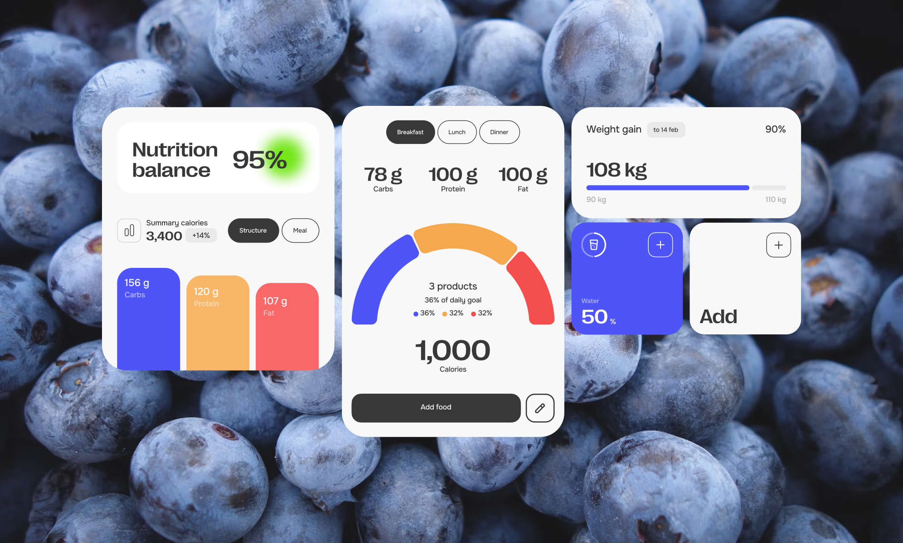
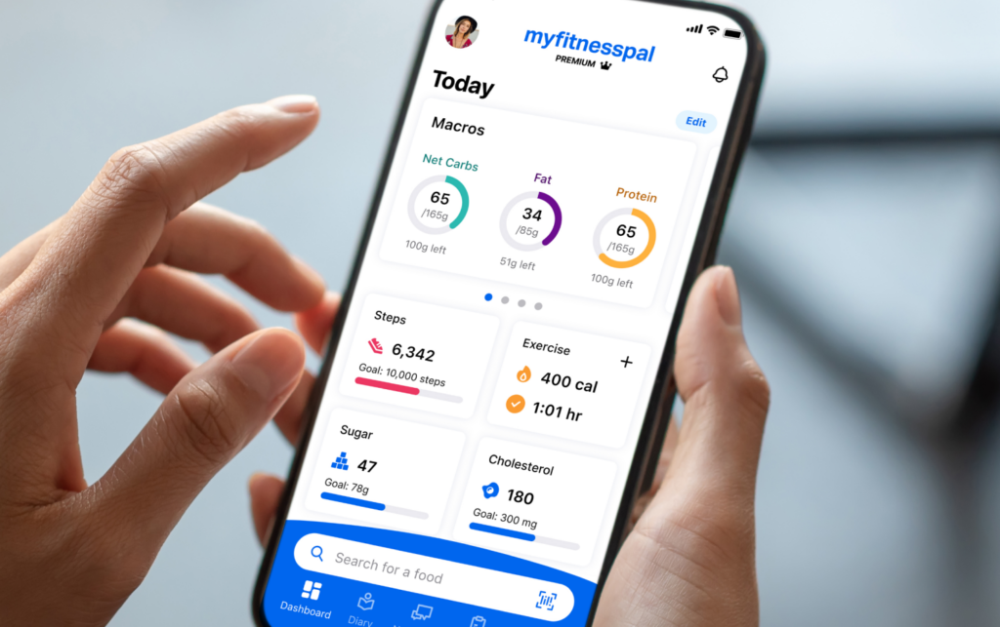
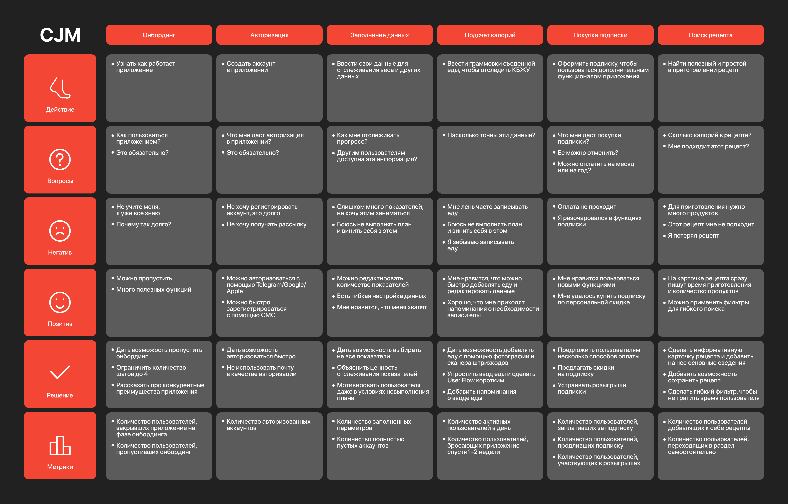
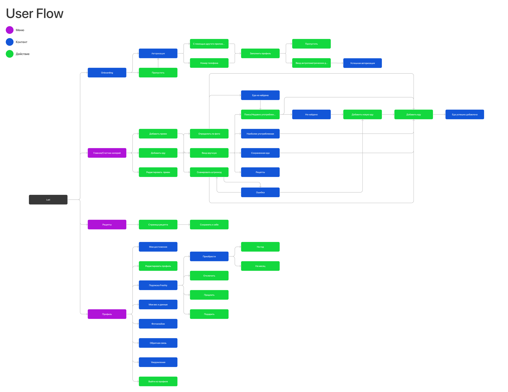
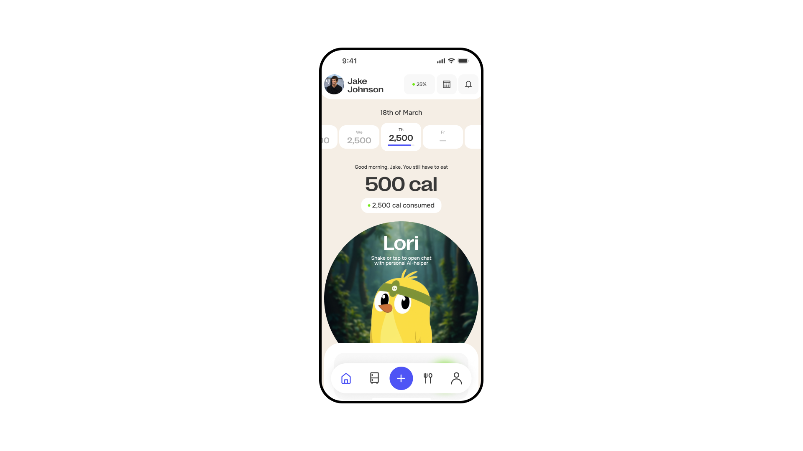
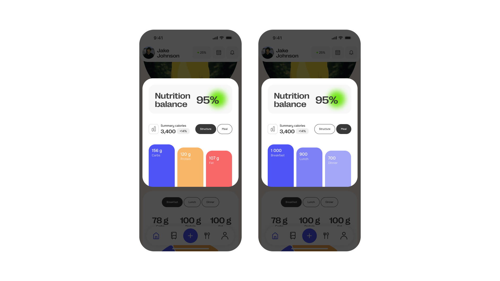
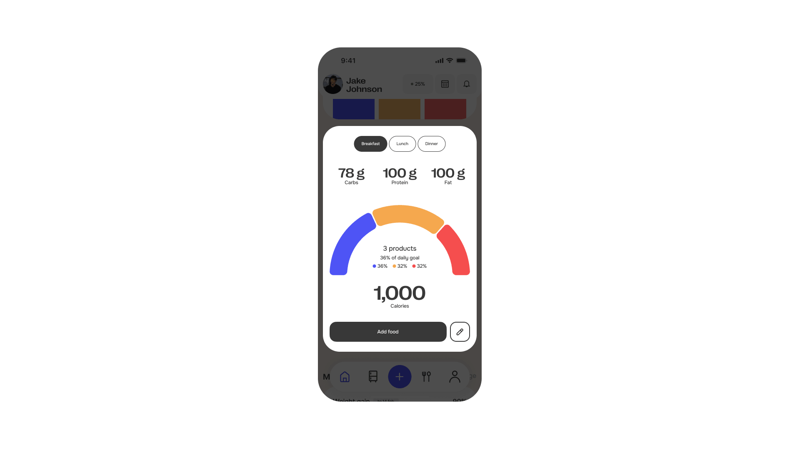
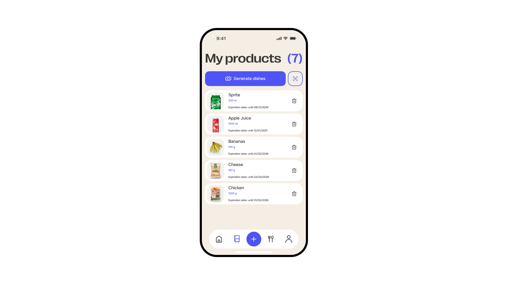
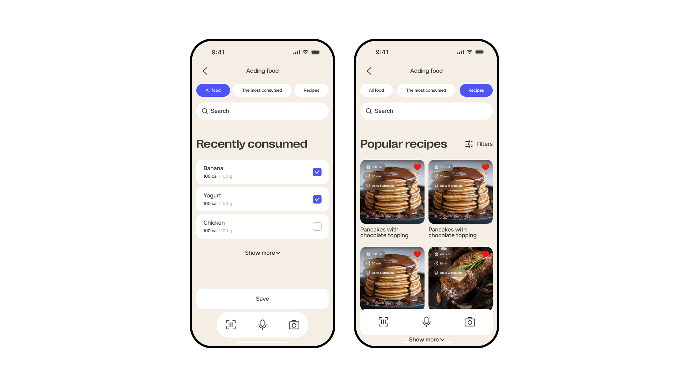
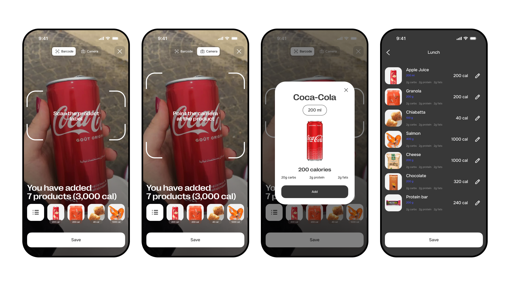

Проблема
Пользователи часто бросают трекинг калорий и удаляют приложение
Решение
Разработка дизайна и флоу, который будет удерживать пользователей в продукте
Результат
Дизайн MVP мобильного приложения; проработка 3-ех ключевых сценариев; увеличение удержания пользователя
Задача
Основная проблема большинства приложений для трекинга калорий:
- Процесс требует слишком много времени и дисциплины.
- Пользователи быстро перестают пользоваться приложением.
Я предложил решение:
- AI-генерация блюд из имеющихся продуктов.
- Быстрый трекинг питания.
- Визуализация баланса БЖУ.
- Маскот, который помогает не бросать привычку.
В рамках проекта я разработал MVP приложения, включая пользовательские сценарии, UX-архитектуру и интерфейс.

Проблема
Большинство приложений для отслеживания питания сталкиваются с низким удержанием. Пользователи начинают считать калории, но быстро бросают.
Основные причины:
- Неудобно добавлять продукты.
- Нужно вручную вводить данные.
- Сложно планировать рацион.
В результате приложение превращается в рутинный инструмент, которым перестают пользоваться.
Цель проекта
Создать приложение, которое:
- Упрощает трекинг питания.
- Помогает быстро составлять рацион.
- Мотивирует пользователя продолжать следить за питанием.

Этапы
1. Исследование пользователей
Провёл анализ аудитории приложений для отслеживания калорий: изучил мотивацию, цели, паттерны поведения и ключевые сценарии использования.
2. Формирование пользовательских сегментов
На основе исследования сформировал сегменты и описал их задачи, потребности и барьеры при использовании приложений для трекинга питания.
3. Проработка пользовательских сценариев
Спроектировал сценарии и составил User Flow для ключевых действий: добавление еды, отслеживание калорий, поиск рецептов и генерация блюд.
4. Описание Jobs To Be Done
Описал Job Story для каждого сегмента, определил мотивацию и предложил конкретные функции для внедрения.
5. Customer Journey Map
Разработал CJM по 6 ключевым сценариям: онбординг, авторизация, заполнение данных, подсчёт калорий, покупка подписки, поиск рецепта.
6. Анализ рынка и конкурентов
Изучил существующие приложения на рынке, определил их плюсы и минусы.
7. Дизайн MVP-версии продукта
Разработал интерфейс MVP, сфокусированный на ключевых функциях: трекинг питания, работа с рецептами и генерация блюд из имеющихся ингредиентов.
Исследование пользователей
Я изучил аудиторию приложений для трекинга питания и выделил три ключевых сегмента:
Спортсмены
Следят за балансом БЖУ для улучшения результатов.
Проблемы:
- Долго вводить продукты.
- Сложно составлять рацион.
Люди с пищевыми ограничениями
Должны строго контролировать питание.
Проблемы:
- Сложно анализировать состав блюд.
- Сложно подобрать подходящие рецепты.
Занятые родители
Хотят готовить полезную еду для семьи.
Проблемы:
- Нет времени считать калории.
- Сложно планировать питание.
Анализ конкурентов
Я изучил популярные приложения для трекинга питания:
- FatSecret.
- MyFitnessPal.
- Lifesum.
Основные проблемы существующих продуктов:
- Устаревший интерфейс.
- Отсутствие вовлекающих механик.
- Сложный процесс добавления еды.
Например, в MyFitnessPal большая база продуктов, но интерфейс перегружен, а часть функций доступна только по подписке.

CJM
Для составления CJM я взял ключевые сценарии и для каждого определил 6 показателей: действие, вопросы, негатив, позитив, решение и метрики.

Ключевые инсайты
После исследования я выделил несколько инсайтов:
1. Пользователи быстро теряют мотивацию
Трекинг питания требует дисциплины и времени.
2. Добавление еды - главный friction
Пользователи не хотят вручную вводить продукты.
3. Люди хотят готовые решения
Большинство пользователей не хотят самостоятельно составлять рацион.
Решение
Я предложил концепцию приложения, которое не просто считает калории, а помогает планировать питание.
Основные функции продукта:
- Трекинг питания.
- Поиск рецептов.
- Генерация блюд из имеющихся продуктов.
- AI-ассистент для советов по питанию.
UX-архитектура
Я разработал пользовательские сценарии для ключевых действий:
- Добавление еды.
- Отслеживание калорий.
- Поиск рецептов.
- Генерация блюд.
Для этого был составлен User Flow основных сценариев продукта.

Главный экран
Главный экран показывает ключевую информацию о питании пользователя.
Основные элементы:
- Количество оставшихся калорий.
- Баланс БЖУ.
- Информация о приёмах пищи.
- Быстрый доступ к добавлению продуктов.
Добавление еды выделено контрастной кнопкой, так как это основной сценарий приложения.

Далее идет блок с информацией о пищевом балансе. С помощью табов можно смотреть разную информацию: вкладка Structure показывает граммовку БЖУ, вкладка Meal - деление по приёмам пищи.

Далее идёт блок с информацией по завтраку, обеду и ужину. График показывает каждый продукт в его процентном соотношении.

Генерация блюд
Одной из ключевых функций приложения стала генерация рецептов.
Пользователь может:
- Добавить продукты, которые есть дома.
- Получить рецепт блюда из этих ингредиентов.
Это упрощает планирование питания и повышает ценность продукта.

Быстрое добавление еды
Чтобы ускорить трекинг питания, я добавил несколько способов добавления продуктов:
- Поиск продуктов.
- Добавление рецептов.
- Сканирование штрих-кода.
- Использование камеры для распознавания продуктов.


Результат
В рамках проекта я разработал:
- Пользовательские сегменты.
- Ключевые пользовательские сценарии.
- UX-архитектуру приложения.
- Интерфейс MVP продукта.
Проект показал, как можно повысить вовлеченность пользователей в приложениях для трекинга питания за счёт AI-механик и упрощения сценариев использования.
Следующий кейс